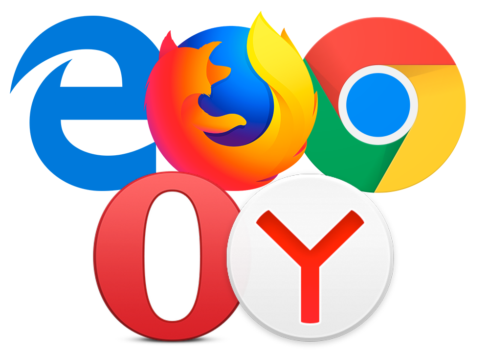

Список терминов

Вот некоторые из терминов, касающихся темы HTML и css.
- HTML
- Это система верстки веб-страниц, которая определяет, какие элементы и как должны располагаться в документе. Чтобы показать, что мы имеем дело не с обычным текстовым документом, используется термин HTML-документ. Подобные документы открываются под управлением браузера.
- Веб-страница
- Это сетевой документ, открываемый в браузере. Обычно веб-страница создается в формате HTML и содержит, как правило, текст, изображения и ссылки. В связи с развитием технологий, веб-страницей также могут называться документы и в другом формате, например, XML, Flash, PDF и т.д.
- Cайт
- это набор отдельных веб-страниц, которые связаны между собой ссылками и единым оформлением.
- HTML-документ
- Это обычный текстовый файл, который может содержать в себе текст, теги и стили. Изображения и другие объекты хранятся отдельно. Содержимое такого файла обычно называется HTML-код.
- Браузер
- Это программа для просмотра веб-страниц. Браузер анализирует код HTML, находит специальные символы, называемые тегами, и использует их для отображения изображений, изменения вида текста, создание ссылок на другие веб-страницы и т.д.

- Тег
- Это специальный символ разметки, который применяется для вставки различных элементов на веб-страницу таких как: рисунки, таблицы, ссылки и др. и для изменения их вида. Для обозначения тегов используется символ <тег>. Теги нечувствительны к регистру, поэтому запись <B> и <b> эквивалентна.
- Контейнер
- Это парный тег, внутри которого могут располагаться другие теги. Контейнер требует закрывающего тега, обозначаемого (</тег>). Таким образом, контейнер состоит из открывающего тега (<тег>) и закрывающего (</тег>).
- Ссылки
- Это основой сетевых документов и позволяют переходить с одной веб-страницы на другую. Особенность их состоит в том, что сама ссылка может указывать не только на HTML-файлы, но и на файл любого типа, причем этот файл может размещаться совсем на другом сайте. Главное, чтобы к файлу, на который делается ссылка, был доступ.
- CSS или стили
- Это набор параметров форматирования, который применяется к элементам документа, чтобы изменить их внешний вид. Возможность работы со стилями издавна включают в развитые издательские системы и текстовые редакторы, тем самым, позволяя одним нажатием кнопки придать тексту заданный, заранее установленный вид. Теперь это доступно и создателям сайта, когда цвет, размеры текста и другие параметры хранятся в определенном месте и легко «прикручиваются» к любому тегу.
- Редактор веб-страниц
- Представляет собой обычный текстовый файл и его можно править в любом текстовом редакторе, для этой цели лучше использовать специализированные программы, которые называются редакторами веб-страниц. Такие программы по своему подходу делятся на WYSIWYG-редакторы и HTML-редакторы.
- WYSIWYG
- Визуальный редактор, в котором элементы отображаются так, как они впоследствии будут показаны в браузере.
- HTML-редактор
- Это редактор, предназначенный для добавления и изменения кода HTML. В отличие от обычных текстовых редакторов здесь существует подсветка синтаксиса, проверка правильности кода, удобное добавление и редактирование параметров тегов, и многое другое.
- Кодировка
- Чтобы русскоязычные символы корректно отображались в браузере, их необходимо указывать в определенной кодировке. Браузер понимает, какая кодировка используется в документе, если определенным образом настроен веб-сервер или внутри веб-страницы добавлен соответствующий параметр.
- Веб-сервер
- Это компьютер, на котором хранятся документы сайта. Одновременно так же называется программа, которая обеспечивает выдачу документов при их запросе браузером, а также работу с различными сервисами. Наиболее популярными веб-серверами являются Apache и Internet Information Server (IIS).

Самые распространенные автомобили
| Марка |
Модель |
АКПП |
МКПП |
Объем двигателя |
| Huyndai |
Solaris |
+ |
+ |
1.6 |
| kia |
Rio |
+ |
+ |
1.6 |
| VW |
Polo |
+ |
+ |
1.6 |
| Skoda |
Rapid |
+ |
+ |
1.4, 1.6 |
| kia |
Sportage |
+ |
+ |
2.0, 2.4 |
| Toyota |
Corolla |
+ |
+ |
1.6, 1.8 |
| Toyota |
Rav 4 |
+ |
+ |
2.0, 2.4 |
| kia |
Cerato |
+ |
+ |
1.6, 2.0 |